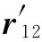
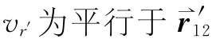
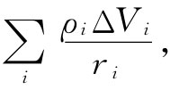
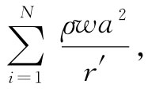
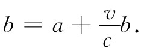
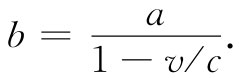

在上一节，由于我们仅仅考虑低速的情况，所以在计算A的积分时做了简化。但在这样做时我们遗漏了一个要点，而这一点也正是容易出错的地方。因此，现在我们将对一个以任何方式——甚至以相对论性速度——运动的点电荷的势进行计算。一旦有了这个结果，我们便将拥有关于电荷的整个电磁学。这时就连式（21.1）也可以通过取微商而推导出来。由于故事将是完整的，所以请耐心听下去。
让我们尝试计算由一个不管以任何方式运动的点 电荷（诸如一个电子）在点（x，y，z）上所产生的标势ϕ（1），所谓“点”电荷我们指的是一个十分微小的电荷球，可以缩小到任意程度，并带有电荷密度ρ（x，y，z），我们可以由式（21.15）求得ϕ：
答案似乎应该是——而几乎每个人最初总会认为——ρ对整个这样一个“点”电荷的积分恰好就是其总电荷q，因而
对于 ，我们指的是在推迟时刻（t-r12 /c）从电荷所处位置点（2）至点（1）的矢径。但这个式子是错的。
正确的答案是
式中 ——即指向点（1）——的电荷速度分量。现在要向你们解释其中原因。为使论证易于接受，我们将先对一个具有小立方体形状而以速率v朝向点（1）运动的“点”电荷进行计算，如图21-5（a）所示。令该立方体的每边长度为a，我们假定它比r12 （即从电荷中心至点（1）的距离）要小很多很多。
现在计算式（21.28）的积分，我们将回到基本原理上去；将它写成求和式
 （21.30）
其中ri 是从点（1）至第i个体积元ΔVi 的距离，而ρi 则是在ti =t-ri /c时刻ΔVi 处的电荷密度。由于始终ri ≫a，因而把ΔVi 取为垂直于r12 的一个矩形薄片将是方便的，正如图21-5（b）所示。
图21-5 （a）“点”电荷——视作一个小立方体的电荷分布——以速率v朝着点（1）运动；（b）用来计算势的体积元ΔVi
设我们事先假定每一体积元ΔVi 的厚度w远小于a，于是单独的体积元看来就像图21-6（a）所示的那样，其中已放上了比完全覆盖电荷还要多的体积元。但我们却还没有 把电荷表示出来，而这是有充分理由的。我们应该把它画在哪里呢？对于每一体积元ΔVi 来说，必须在ti =（t-ri /c）的时刻取ρ，但由于电荷正在运动，因此对每个体积元ΔVi 来说它处在不同的位置 ！
让我们说，我们从图21-6（a）中标明为“1”的体积元开始，该体积元是这样选取的，即在t1 =（t-r1 /c）时刻电荷的“后”端占据着ΔV1 ，如图21-6（b）所示。然后当我们计算ρ2 ΔV2 时，就必须用到在稍微迟 一点的时刻t2 =（t-r2 /c）的电荷位置，这时电荷所处位置如图21-6（c）所示。对于ΔV3 ，ΔV4 等等，可依此类推，现在就能算出那个和了。
图21-6 对一个运动电荷的ρ（t-r′/c）dV进行积分
由于每个ΔVi 的厚度为w，所以它的体积为wa2 。于是与电荷分布重叠的每个体积元含有电量wa2 ρ，其中ρ为立方体内的电荷密度——我们认为它是均匀的。当电荷至点（1）的距离很大时，通过令一切位于分母上的ri 都等于某一平均值，如令等于该电荷中心的推迟位置r′，那么我们这样做造成的误差将是可以忽略的。于是式（21.30）的总和便是

在这里，ΔVN 就是如图21-6（e）所示的、与电荷分布重叠的最后那一个ΔVi 。于是总和显然是
现在ρa3 恰好就是总电荷q，而Nw则是如图21-6（e）所示的那个长度b。因此我们有
b是什么？它是立方体电荷的边长再加上 t1 =（t-r1 /c）与tN =（t-rN /c）之间电荷移动的距离——这就是在如下时间内
Δt=tN -t1 =（r1 -rN ）/c=b/c
电荷所行经的距离。由于电荷的速率为v，所以经过的距离为vΔt=vb/c，但长度b却是这个距离加上a，

解出b，得

当然，所谓v，我们指的是在推迟时刻t′=（t-r′/c）的速度，这可以通过写成（1-v/c）推迟 而指明出来，因此关于势的方程式（21.31）就变成
这一结果与我们上面的断言即式（21.29）相符。这里存在一个修正项，它是由于积分“扫过该电荷”时电荷正在运动引起的。当电荷朝着点（1）运动时，它对该积分的贡献增加了一个比值b/a。因此，正确的积分就是q/r′乘以b/a，后者即是1/（1-v/c）推迟 。
如果电荷速度方向并非朝着观察点（1），那就可以看出，重要的只是朝着点（1）的速度分量 。把这个速度分量称为vr ，则修正因子为1/（1-vr /c）推迟 。并且，对于任何 形状——不一定是立方体——的电荷分布，我们做过的分析按完全相同的方式进行。最后，由于电荷的“尺寸”a并未进入最终的结果，所以当把电荷缩小至任何尺寸——甚至缩小成一点时，上述结果同样成立。对于一个以任意速度运动的点电荷，普遍的结果是标势为
这个式子往往写成等效的形式：
式中r是从电荷指向正在计算ϕ的那个点（1）的矢量，而所有在括号内的量都必须是它们在推迟时刻t′=t-r′/c的值。
当我们由式（21.16）计算有关一个点电荷的势A时，同样的事情也会发生。电流密度为ρv，而对ρ的积分与刚才求ϕ时相同。所以矢势为
有关点电荷的势最初是由李纳和维谢尔导出的，因而被称为李纳-维谢尔势 。
要把这一环节接回到式（21.1）上去，只需从这些势算出E和B（利用B=▽×A和E=-▽ϕ-∂A/∂t）。现在这仅是个算术问题。然而，这项算术相当繁复，所以将不列出所有的细节。也许你会相信我们所说的话，式（21.1）就同上面所导出的李纳维谢尔势相当 [2] 。